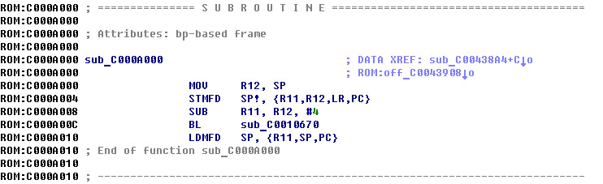

/proc/iomem
# cat /proc/iomem
01c02000-01c024dc : sunxi_dmac
01c0f000-01c0ffff : sunxi-mmc
01c10000-01c10fff : sunxi-mmc
01c11000-01c11fff : sunxi-mmc
01c28000-01c283ff : uart
01c28400-01c287ff : uart
01c28800-01c28bff : uart
01c2b000-01c2b3ff : twi.1
01c2b000-01c2b3ff : twi.1
01c68000-01c68fff : spi.0
01c68000-01c68fff : spi
40000000-47ffffff : System RAM
40008000-40660fff : Kernel code
40686000-4072c1af : Kernel data
f1000000-f1200000 : de
f1c0c000-f1c0c3fc : lcd0
main.c
#include <stdio.h>
#include <stdlib.h>
#include <string.h>
#include <fcntl.h>
#include <sys/mman.h>
#include <unistd.h>
#include <time.h>
int main(int argc, char* argv[])
{
int md = open("/dev/mem", O_RDWR);
void *mem = mmap(0, 0x800000, PROT_READ | PROT_WRITE, MAP_SHARED, md, 0x40000000);
int kd = open("kernel.mem", O_RDWR | O_CREAT);
write(kd, mem, 0x800000);
close(kd);
close(md);
return 0;
}
/proc/kallsym
# cat /proc/kallsym
c000a000 T asm_do_IRQ
c000a000 T _stext
c000a000 T __exception_text_start
c000a014 T do_undefinstr
c000a168 T do_DataAbort
c000a20c T do_PrefetchAbort
c000a2b0 T gic_handle_irq
0x4000a000 = 0xc000a000
